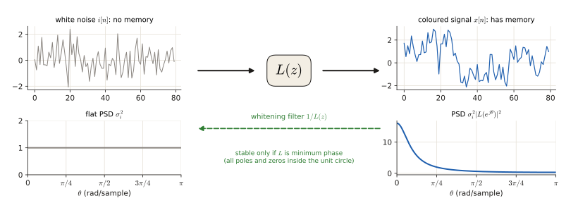
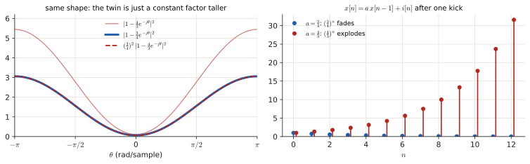
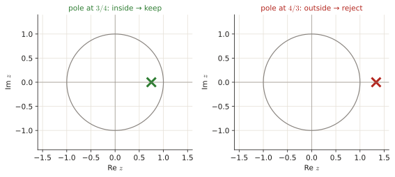

1.4 Spectral factorisation (the innovation filter)#
In every exam since 2022 you get a power spectral density written with cosines and must find the filter $L(z)$ and noise variance $\sigma_i^2$ that produce it. It is a mechanical 5-minute procedure worth 0.25–0.75 p. One idea decides it: pick the root inside the unit circle. This page shows why that rule exists and then drills the procedure.
Before this page
- Complex exponentials and \(\cos\theta=\frac{e^{j\theta}+e^{-j\theta}}2\), \(\lvert u\rvert^2=u\bar u\) (0.3)
- White noise, the PSD of a filtered signal \(P=\sigma_i^2\lvert H\rvert^2\), AR/MA models (3.3 §1–2)
- Quadratic formula and the identity \(\lvert1+ce^{-j\theta}\rvert^2=1+c^2+2c\cos\theta\) (Toolbox)
If you read only one thing: spectral factorisation is 3.3 run backwards. There you got a PSD from a model; here you get the model from a PSD. The only subtlety is that two models fit, and you pick the stable one (root inside the unit circle).
1 · The idea, from zero#
1.1 What is being asked#
White noise \(i[n]\) is a sequence of uncorrelated random numbers with zero mean and variance \(\sigma_i^2\). Its PSD is flat: every frequency has the same power \(\sigma_i^2\) (3.3 §1.1).
If you pass a random signal through a linear filter \(H(z)\), its spectrum gets multiplied by the squared magnitude of the filter (3.3 §2):
So white noise through a filter \(L(z)\) gives a "coloured" signal with PSD \(\sigma_i^2|L(e^{j\theta})|^2\). The innovation representation says: almost any WSS signal can be seen as white noise through a filter. Finding that filter and the noise variance from the PSD is spectral factorisation:
(on the unit circle \(L(z^{-1})\) is the complex conjugate of \(L(z)\), so the product is \(\lvert L\rvert^2\)).

1.2 Why two answers fit, and why we pick "inside the unit circle"#
The PSD only knows \(|L|^2\). Take the factor \((1-az^{-1})\) and its twin \((1-a^{-1}z^{-1})\). Their squared magnitudes differ only by a constant:
So there are always two candidates for every factor, and the constant \(a^{-2}\) just gets absorbed in \(\sigma_i^2\). Which one is the "real" filter? The convention that makes the answer unique: \(L(z)\) is causal, stable and minimum phase, i.e. all poles and zeros inside the unit circle (\(|a|<1\)), and its first impulse-response sample is \(l[0]=1\).
Why that is natural: the AR(1) recipe \(x[n]=a\,x[n-1]+i[n]\) has the pole at \(a\). If \(|a|<1\) the memory fades and the signal stays bounded (e.g. \(a=\frac34\): each value remembers \(\frac34\) of the previous one). If \(|a|>1\) (e.g. \(a=\frac43\)) the recursion explodes. Minimum phase also guarantees that the inverse \(1/L(z)\), the whitening filter that turns \(x[n]\) back into \(i[n]\), is stable.


1.3 The key identity#
The PSD is written with cosines, the filter with \(z\). The bridge (Toolbox, derived in 3.3 §2): using \(z+z^{-1}=2\cos\theta\) on the unit circle,
With a plus sign, \((1+az^{-1})(1+az)=(1+a^2)+2a\cos\theta\).
Recipe: spectral factorisation of \(P(e^{j\theta})=\dfrac{\alpha_n\pm\beta_n\cos\theta}{\alpha_d\pm\beta_d\cos\theta}\)
Do numerator and denominator separately. For "\(\alpha\pm\beta\cos\theta\)":
- Match it to \(C\big[(1+a^2)\pm2a\cos\theta\big]\): \(\quad C(1+a^2)=\alpha,\qquad 2Ca=\beta.\)
- Divide the two equations to remove \(C\): \(\dfrac{1+a^2}{2a}=\dfrac{\alpha}{\beta}\), i.e. \(a^2-\dfrac{2\alpha}{\beta}a+1=0\). The two roots are \(a\) and \(1/a\) (their product is 1).
- Keep the root with \(|a|<1\).
- \(C=\beta/(2a)\).
-
With \(C_n,b\) from the numerator and \(C_d,a\) from the denominator:
\[\sigma_i^2=\frac{C_n}{C_d},\qquad L(z)=\frac{1\pm bz^{-1}}{1\pm az^{-1}}\]using the same sign as the cosine term (minus cos ↔ minus in \(L\)).
-
Check at \(\theta=0\): \(\sigma_i^2\,\frac{(1\pm b)^2}{(1\pm a)^2}\) must equal \(P(e^{j0})\).
Smallest possible example: \(P=\dfrac{5}{4}+\cos\theta\) (a numerator only)
Match \(C(1+b^2)=\frac54\) and \(2Cb=1\) (plus sign). Divide: \(\frac{1+b^2}{2b}=\frac54\Rightarrow2b^2-5b+2=0\Rightarrow b=\frac12\) or \(2\). Keep \(b=\frac12\), \(C=\frac1{2b}=1\). So \(P=1\cdot(1+\frac12z^{-1})(1+\frac12z)\): an MA(1) with \(b=\frac12\) driven by unit-variance noise (compare 3.4 Jan 2020 ex. 3).
Traps
- \(\cos\theta=\frac{z+z^{-1}}{2}\): the coefficient of \(z\) is half the cosine coefficient. Writing \(60\cos\theta\) as \(60(z+z^{-1})\) is the classic mistake.
- A constant numerator (e.g. 1 or 7) gives \(b=0\), \(C_n=\) that constant.
- \(L(z^{-1})\) (poles outside the circle) is the maximum-phase twin, never the answer.
Exam questions#
April 2025 exam · 1e#
Final exam Q3, 13 April 2025 · 1e · 0.4 p
Random signal \(x[n]\) has the following power spectral density:
Find the spectral factorization of \(x[n]\), that is, the innovation filter \(L(z)\) and the variance of the input noise \(\sigma_i^2\).
Solution
What is being asked? Write \(P_x=\sigma_i^2L(z)L(z^{-1})\) with \(L\) minimum phase: give \(L(z)\) and \(\sigma_i^2\).
Symbols in this question. \(C_n,C_d\): the constants for numerator and denominator; \(a\): the denominator's root (pole of \(L\)); \(b\): the numerator's root (zero of \(L\)).
Step 1 — numerator. It is the constant 1: \(C_n=1\), no zero (\(b=0\)).
Step 2 — denominator. \(61+60\cos\theta\) has a plus sign, so match with \(C_d(1+az^{-1})(1+az)=C_d(1+a^2)+2C_da\cos\theta\):
Step 3 — remove \(C_d\). Divide: \(\dfrac{1+a^2}{a}=\dfrac{61}{30}\Rightarrow30a^2-61a+30=0\). Quadratic formula: \(a=\dfrac{61\pm\sqrt{61^2-4\cdot900}}{60}=\dfrac{61\pm11}{60}=\dfrac65\text{ or }\dfrac56.\)
Step 4 — pick the root inside the unit circle: \(a=\frac56\). Then \(C_d=30/a=30\cdot\frac65=36\).
Step 5 — assemble. \(\sigma_i^2=\dfrac{C_n}{C_d}=\dfrac1{36}\) and, with the plus sign, \(L(z)=\dfrac{1}{1+\frac56z^{-1}}\).
Check at \(\theta=0\): \(\frac{1/36}{(1+5/6)^2}=\frac{1/36}{121/36}=\frac1{121}\) and \(\frac1{61+60}=\frac1{121}\) ✓
Answer
\(L(z)=\dfrac{1}{1+\frac56z^{-1}}\), \(\quad\sigma_i^2=\dfrac1{36}\)
April 2024 exam · 1e#
Final exam Q3, April 2024 · 1e · 0.4 p
A random signal \(x[n]\) has the power spectra density given by:
Find the spectral factorization of \(x[n]\). In other words, find the coefficients of the innovation filter \(L(z)\) and the variance of the input noise \(\sigma_i^2\), so that \(x[n]\) can be expressed as the output of the innovation filter when white noise with variance \(\sigma_i^2\) is given as input.
Solution
What is being asked? Same recipe; the denominator now has a minus cosine.
Step 1 — numerator. Constant 7: \(C_n=7\).
Step 2 — denominator (\(25-24\cos\theta\), match with \(C_d[(1+a^2)-2a\cos\theta]\)): \(C_d(1+a^2)=25\) and \(2C_da=24\Rightarrow C_da=12\).
Step 3 — remove \(C_d\): \(\dfrac{1+a^2}{a}=\dfrac{25}{12}\Rightarrow12a^2-25a+12=0\Rightarrow a=\dfrac{25\pm7}{24}=\dfrac43\text{ or }\dfrac34.\) (\(\sqrt{625-576}=7\).)
Step 4 — inside the circle: \(a=\frac34\); \(C_d=12/a=16\). (Check: \(16(1+\frac9{16})=25\) ✓.)
Step 5 — assemble: \(\sigma_i^2=\dfrac{C_n}{C_d}=\dfrac7{16}\) and (minus sign) \(L(z)=\dfrac{1}{1-\frac34z^{-1}}\).
Check \(\theta=0\): \(\frac{7/16}{(1/4)^2}=7\) and \(\frac{7}{25-24}=7\) ✓. So \(x[n]\) is an AR(1) process: \(x[n]=\frac34x[n-1]+i[n]\) (3.3 §1.2).
Answer
\(L(z)=\dfrac{1}{1-\frac34z^{-1}}\), \(\quad\sigma_i^2=\dfrac7{16}\)
November 2022 exam · 1d#
Final exam Q1, 7 November 2022 · 1d · 0.75 p
A random signal \(x[n]\) has power spectral density given by \(P_x(e^{j\theta}) = \frac{1}{\frac{5}{3} - \cos(\theta)}\). Find the spectral factorization of \(x[n]\). In other words, modeling \(x[n]\) as the output of an LTI driven by white noise, find the variance of the input noise \(\sigma_i^2\) and the innovation filter \(L(z)\).
Solution
What is being asked? The same recipe with fractions in the denominator.
Step 1 — numerator: \(C_n=1\).
Step 2 — denominator \(\frac53-\cos\theta\) (minus sign): \(C_d(1+a^2)=\frac53\) and \(2C_da=1\).
Step 3 — remove \(C_d\): \(\dfrac{1+a^2}{2a}=\dfrac53\Rightarrow3(1+a^2)=10a\Rightarrow3a^2-10a+3=0\Rightarrow a=\dfrac{10\pm8}{6}=3\text{ or }\dfrac13.\)
Step 4 — inside the circle: \(a=\frac13\), so \(C_d=\frac{1}{2a}=\frac32\).
Step 5 — assemble: \(\sigma_i^2=\frac{C_n}{C_d}=\frac{1}{3/2}=\frac23\) and \(L(z)=\dfrac{1}{1-\frac13z^{-1}}\), i.e.
Check \(\theta=0\): \(\frac{2/3}{(2/3)^2}=\frac32\) and \(\frac{1}{5/3-1}=\frac32\) ✓
Answer
\(L(z)=\dfrac{1}{1-\frac13z^{-1}}\), \(\quad\sigma_i^2=\dfrac23\)
January 2024 resit · 1f#
Resit January 2024 · 1f · 0.25 p (shown in the Part 1 review lecture)
A random signal has the following power spectral density:
Which of the following is the spectral factorization of \(P(e^{j\theta})\)?
- (a) \(L(z) = \frac{1+3z^{-1}}{1-4z^{-1}}\), and \(\sigma_i^2 = 1\)
- (b) \(L(z) = \frac{1+3z^{-1}}{1-\frac{1}{4}z^{-1}}\), and \(\sigma_i^2 = \frac{1}{16}\)
- (c) \(L(z) = \frac{1+\frac{1}{3}z^{-1}}{1-\frac{1}{4}z^{-1}}\), and \(\sigma_i^2 = \frac{9}{16}\)
- (d) \(L(z) = \frac{1+\frac{1}{3}z^{-1}}{1-4z^{-1}}\), and \(\sigma_i^2 = 9\)
Solution
What is being asked? Pick the correct factorisation among four that look alike.
Step 1 — the fast way (MC). All four options produce the same PSD (the roots \(3\leftrightarrow\frac13\) and \(4\leftrightarrow\frac14\) are the twins of 1.2, with the constants absorbed in \(\sigma_i^2\)). Only one has every pole and zero inside the unit circle: (c), with zero \(-\frac13\) and pole \(\frac14\).
Step 2 — the full way. Numerator \(10+6\cos\theta\) (plus sign): \(C_n(1+b^2)=10\), \(C_nb=3\Rightarrow\frac{1+b^2}{b}=\frac{10}3\Rightarrow3b^2-10b+3=0\Rightarrow b=\frac13\) (keep), \(C_n=\frac{3}{b}=9\).
Step 3. Denominator \(17-8\cos\theta\) (minus sign): \(C_d(1+a^2)=17\), \(C_da=4\Rightarrow4a^2-17a+4=0\Rightarrow a=\frac{17\pm15}{8}=\frac14\) (keep) or \(4\), \(C_d=\frac4a=16\).
Step 4 — assemble: \(\sigma_i^2=\frac{C_n}{C_d}=\frac9{16}\), \(L(z)=\frac{1+\frac13z^{-1}}{1-\frac14z^{-1}}\).
Answer
(c)
Slide typo
The "extra exercise" in the 2026-27 Part 1 review deck ends with \(L(z)=\frac{1-\frac14z^{-1}}{1-\frac13z^{-1}}\): numerator and denominator swapped and a sign flipped. The correct factorisation is option (c) above.
January 2022 resit · 1d#
Resit, 24 January 2022 · 1d · 0.3 p
Random signal \(x[n]\) has power spectral density given by
which is factorized as
Which of the following statements is true?
- a) The provided factorization does not represent the spectral factorization of signal \(x[n]\).
- b) The innovation filter is given by \(L(z^{-1}) = \frac{1 - \frac{1}{4}z}{1 + \frac{3}{4}z}\).
- c) The innovation filter is given by \(L(z) = \frac{1 - \frac{1}{4}z^{-1}}{1 + \frac{3}{4}z^{-1}}\).
- d) The input variance is given by \(\sigma_i^2 = 1/2\).
Solution
What is being asked? Read the given factorisation \(\sigma_i^2L(z)L(z^{-1})\) and decide which statement about it is right. (The printed PSD was garbled by the conversion; the official clarification: the denominator should be \(\frac{25}{16}+\frac32\cos\theta\), otherwise the sign does not match the factorisation. Check: \((1+\frac34z^{-1})(1+\frac34z)=\frac{25}{16}+\frac32\cos\theta\) ✓ and \(2(1-\frac14z^{-1})(1-\frac14z)=2\big(\frac{17}{16}-\frac12\cos\theta\big)=\frac{17}8-\cos\theta\) ✓.)
Step 1 — read off the pieces. \(\sigma_i^2=2\) (the constant in front), \(L(z)=\frac{1-\frac14z^{-1}}{1+\frac34z^{-1}}\): zero at \(\frac14\), pole at \(-\frac34\), both inside the unit circle, so this is the minimum-phase factor.
Step 2 — the options. (a) false: it is a valid factorisation. (b) \(L(z^{-1})\) has its zero and pole outside the circle (maximum phase): not the innovation filter. (c) true. (d) the constant in front is \(\sigma_i^2=2\), not \(\frac12\).
Answer
(c)
June 2026 resit · 1e#
Resit Q4, June 2026 · 1e · 0.25 p
Which of the following conditions is required for a discrete-time rational filter \(H(z)\) to be the innovation filter obtained through the spectral factorisation of a given Power Spectral Density \(P_x(z)\)?
- (a) \(H(z)\) must be a minimum-phase system, meaning all its poles and zeros must lie inside (or on) the unit circle.
- (b) \(H(z)\) must be a maximum-phase system, meaning all its poles and zeros must lie strictly outside the unit circle.
- (c) \(H(z)\) must have a purely real-valued impulse response with strict linear phase to avoid phase distortion.
- (d) \(H(z)\) must be an all-pass system to ensure that the power of the driving noise is perfectly preserved.
Solution
What is being asked? The defining property of the innovation filter (1.2).
Step 1. The innovation filter is causal, stable and minimum phase (poles and zeros inside the unit circle): (a). The reader excludes poles on the circle; the "(or on)" refers to zeros, which may sit on it, e.g. the zero at \(z=1\) in Nov 2022 3d.
Step 2. (b) is the maximum-phase twin. (c) linear phase is unrelated. (d) An all-pass system has a flat \(|H|^2\), so it could never shape a spectrum.
Answer
(a) minimum phase